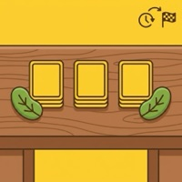

你係一個豆田農夫, 呢個春天你抽到嘅豆決定你成個季節嘅命運。眾豆得金嘅設計天才在於: 「手牌順序不能改變」— 呢個限制迫你同其他農夫不停 trade, 笑料同策略都喺傾計度誕生。
為咩好玩: 🤝 5-7 人坐枱 trade 笑到反枱, 1 局 60 分鐘過咗好似 15 分鐘

你係一個豆田農夫, 呢個春天你抽到嘅豆決定你成個季節嘅命運。眾豆得金嘅設計天才在於: 「手牌順序不能改變」— 呢個限制迫你同其他農夫不停 trade, 笑料同策略都喺傾計度誕生。
為咩好玩: 🤝 5-7 人坐枱 trade 笑到反枱, 1 局 60 分鐘過咗好似 15 分鐘
牌序鎖死嘅談判遊戲
眾豆得金係 Uwe Rosenberg 1997 年設計嘅經典談判遊戲, 中文版由新天鵝堡或玩聚設計代理。遊戲背景設定喺種豆農夫, 玩家透過種植、交易、收割豆田, 賺最多金幣就贏。
呢個 桌遊 適合 3-7 人 (4-6 人最佳, 牌序鎖死嘅 trade 最好玩), 2 人亦可以玩但談判少啲味道。教學時間 15 分鐘, 一局 45-60 分鐘, 難度中等。
每個玩家拎一塊豆田圖板 (3 人用 3 田面, 4-7 人用 2 田面, 第 3 塊田要自己買)。每個玩家攞 5 張手牌, 攞嘅時候 1 張 1 張攞, 順序放 (呢個就係手牌順序嘅開始, 之後唔可以改)。每個玩家 0 金幣起手, 喺每個玩家面前放一疊金幣卡。其餘嘅牌 gold coin side up 放喺枱中央當牌庫, 留位放棄牌堆。隨機揀一個 starting player, 攞 starting player card。
輪到你時, 你必須種你手牌「最頂」嗰張 (即你攞到嘅第一張) 落其中一塊田。如果你冇適合嘅田 (即冇相同種類嘅空田), 你可以收割其中一塊田騰空位, 或者買第 3 塊田 (中文版 3 金幣, 英文版 5 金幣)。跟住你可以選擇種第 2 張手牌落田, 但最多種 2 張, 唔可以種第 3 張。
呢個階段唔可以 trade — trade 係下個階段嘅事。
種完之後, 從牌庫翻開頭 2 張牌, 攤喺枱面俾所有人睇。呢 2 張牌屬於你, 你可以選擇種落自己田, 或者用嚟 trade。跟住你可以同其他玩家 trade (只限你 active 嗰陣, 其他玩家之間唔可以私下 trade)。你可以用翻開嘅 2 張牌 + 自己手牌嘅任何牌嚟 trade, 張數比例冇限制。你亦可以送牌俾人 (但對方可以拒收)。
Trade 規則: 收到嘅牌唔可以再 trade, 擺喺田嘅旁邊 (唔加入手牌), 等下個階段種落田。
Trade 結束之後, 所有玩家要將 trade 收到嘅牌 (同你翻開但保留嘅 2 張) 種落田。種嘅順序你自己決定, 唔需要跟手牌順序。冇空田嘅話要收割或者買田。
回合最後, 從牌庫抽 3 張手牌 (6-7 人抽 4 張), 1 張 1 張抽, 順序放喺手牌最後面。如果牌庫抽乾, 將棄牌堆洗返轉當新牌庫, 遊戲繼續。補完牌之後回合結束, 輪到下一個玩家。
收割係 任何時間都可以做 (包括唔係你 turn 嘅時候), 唔需要等下個 turn。你可以選擇一塊田, 將成塊田嘅豆全部賣俾金幣庫, 換金幣 (1 張 1 金, 2 張 4 金, 3 張 6 金, 4 張 9 金 — 愈多豆同一時間賣愈值錢)。唔可以只收割田嘅一部分, 要全塊田清空。
特殊規則: 如果有一塊田只有 1 張豆, 而其他田有 2 張或以上, 唔可以收割 1 張嘅田 (要先收割 2 張以上嘅田)。除非所有田都只有 1 張。
💡 例子 例: 紅豆收成表 — 1 張 2 金 / 2 張 4 金 / 3 張 6 金 / 4 張 9 金。當你手上有 2 張紅豆, trade 多 1 張先, 邊際收益跳一級。

牌庫第 3 次用完時遊戲結束 (每次用完都洗棄牌堆做新牌庫)。End game 時所有玩家強制收割所有田 (手上嘅牌全部作廢, 唔計分), 金幣最多嘅玩家贏。
眾豆得金 官方規則書 (Amigo / Rio Grande) 嘅 和局處理 規則:
注意: 之前流傳嘅 tiebreaker 包括「未種牌 + 未收豆總張數多者勝」並唔喺官方規則, 係坊間亂講。
來源: Rio Grande Games Bohnanza Rules (2013 revision) page 4 "End of the Game" 段落。可以上 BGG 確認: https://boardgamegeek.com/boardgame/11/bohnanza
新手會「唔肯 trade」, 結果塞死自己。眾豆得金嘅設計就係迫你 trade, 接受差 trade 比起完全 reject 好。
唔可以。呢個係眾豆得金嘅核心, 重排會 break 成個 game。
新手建議保留 5 金幣做 trade currency, 唔好為咗 3 塊田蝕底。高手會喺 round 3 之後先買。
5-7 人最佳, 2 人太靜, 3-4 人 OK 但少咗 trade 機會。
15 分鐘教晒, 但新手要玩 2-3 局先掌握牌序鎖死嘅痛苦。第一次玩要示範 1 局俾新手睇。
新手可以一併推薦:
UNITARY 係為香港同台灣桌遊新手同愛好者而設嘅教學網誌, Herry Ma 個人計劃。內容 base on 官方規則書 + BGG 數據 + 自己試玩經驗。


有問題、想分享戰術、或者搵遊戲partner？DM 我哋 Instagram:
📷 Instagram DM →
之後會加 Giscus 留言系統 (GitHub Discussions-based, 實時 + email 通知)